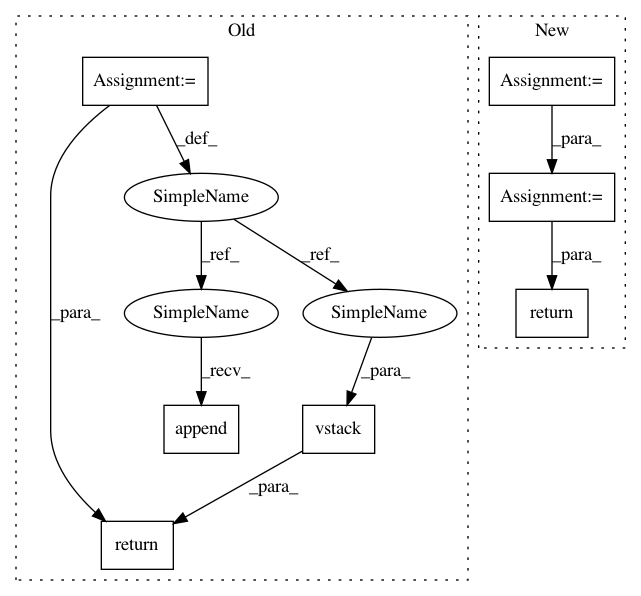

805106ddabbe02b57718a4132190d00c98e94fa4,deepchem/models/__init__.py,Model,predict,#Model#Any#Any#,144
Before Change
y_pred_batch = undo_transforms(y_pred_batch, transformers)
y_preds.append(y_pred_batch)
ys.append(y_batch)
w_preds.append(w_batch)
print("X_batch.shape, y_batch.shape, y_pred_batch.shape")
print(X_batch.shape, y_batch.shape, y_pred_batch.shape)
y = np.vstack(ys)
y_pred = np.vstack(y_preds)
w_pred = np.vstack(w_preds)
//X = X[w.flatten() != 0, :]
//print("Model.predict()")
//print("y.shape, w.shape, y_pred.shape")
//print(y.shape, w.shape, y_pred.shape)
//for task in xrange(num_tasks):
// y_task, w_task, y_pred_task = y[:, task], w[:, task], y_pred[:, task]
// y_task = y_task[w_task.flatten() != 0]
// y_task = to_one_hot(y_task)
// y_pred_task = y_pred_task[w_task.flatten() != 0][:, np.newaxis]
return y, y_pred, w_pred
//task_names = dataset.get_task_names()
//pred_task_names = ["%s_pred" % task_name for task_name in task_names]
//w_task_names = ["%s_weight" % task_name for task_name in task_names]
After Change
batch_size = self.model_params["batch_size"]
// Have to include ys/ws since we might pad batches
y_preds = []
print("predict()")
print("len(dataset)")
print(len(dataset))
for (X_batch, y_batch, w_batch, ids_batch) in dataset.iterbatches(batch_size):
y_pred_batch = np.reshape(self.predict_on_batch(X_batch), y_batch.shape)
y_pred_batch = undo_transforms(y_pred_batch, transformers)
y_preds.append(y_pred_batch)
//ys.append(y_batch)
//w_preds.append(w_batch)
print("X_batch.shape, y_batch.shape, y_pred_batch.shape")
print(X_batch.shape, y_batch.shape, y_pred_batch.shape)
//y = np.vstack(ys)
y_pred = np.vstack(y_preds)
//w_pred = np.vstack(w_preds)
//X = X[w.flatten() != 0, :]
//print("Model.predict()")
//print("y.shape, w.shape, y_pred.shape")
//print(y.shape, w.shape, y_pred.shape)
//for task in xrange(num_tasks):
// y_task, w_task, y_pred_task = y[:, task], w[:, task], y_pred[:, task]
// y_task = y_task[w_task.flatten() != 0]
// y_task = to_one_hot(y_task)
// y_pred_task = y_pred_task[w_task.flatten() != 0][:, np.newaxis]
// The iterbatches does padding with zero-weight examples on the last batch.
// Remove padded examples.
y_pred = y_pred[:len(dataset)]
return y_pred
//task_names = dataset.get_task_names()
//pred_task_names = ["%s_pred" % task_name for task_name in task_names]
//w_task_names = ["%s_weight" % task_name for task_name in task_names]
In pattern: SUPERPATTERN
Frequency: 3
Non-data size: 7
Instances
Project Name: deepchem/deepchem
Commit Name: 805106ddabbe02b57718a4132190d00c98e94fa4
Time: 2016-04-18
Author: bharath.ramsundar@gmail.com
File Name: deepchem/models/__init__.py
Class Name: Model
Method Name: predict
Project Name: deepchem/deepchem
Commit Name: 805106ddabbe02b57718a4132190d00c98e94fa4
Time: 2016-04-18
Author: bharath.ramsundar@gmail.com
File Name: deepchem/models/__init__.py
Class Name: Model
Method Name: predict
Project Name: automl/auto-sklearn
Commit Name: 84dd314904ba2004ab35bbea65c5f2cb684e073c
Time: 2016-02-24
Author: a.domashnev@gmail.com
File Name: autosklearn/estimators.py
Class Name: AutoSklearnClassifier
Method Name: predict
Project Name: commonsense/conceptnet5
Commit Name: 79928872e7b2118ae0cbc8f818850473e15fe14f
Time: 2017-03-30
Author: rob@luminoso.com
File Name: conceptnet5/vectors/debias.py
Class Name:
Method Name: get_vocabulary_vectors